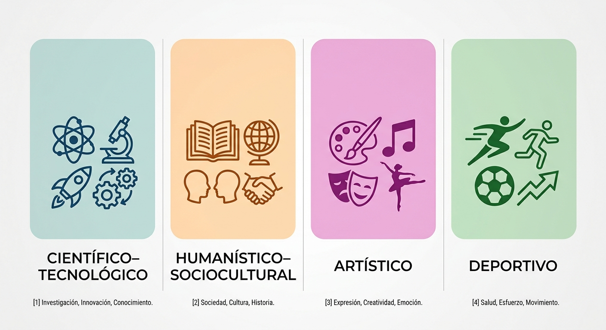
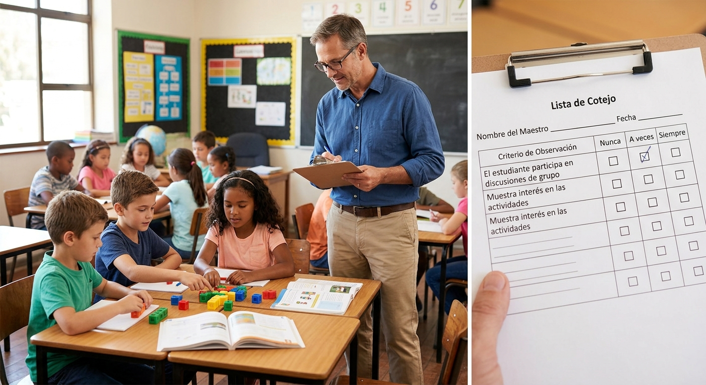
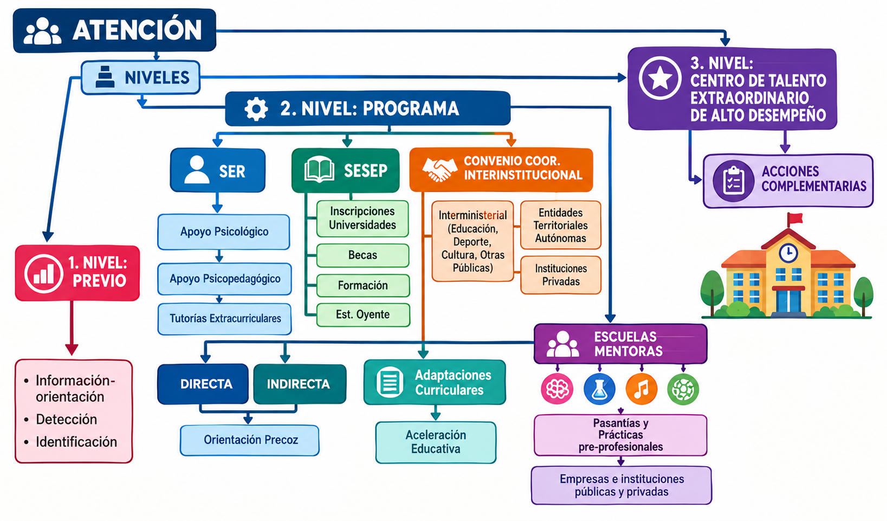
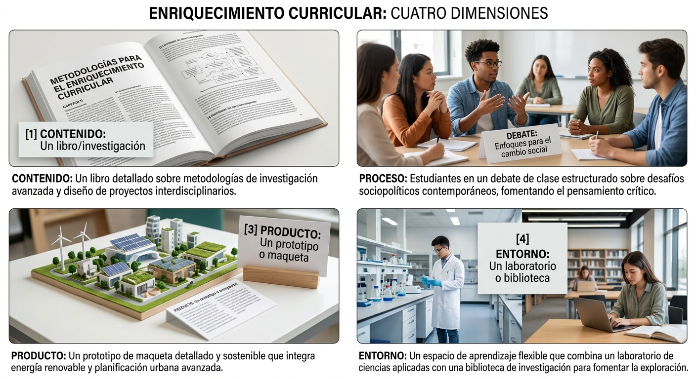
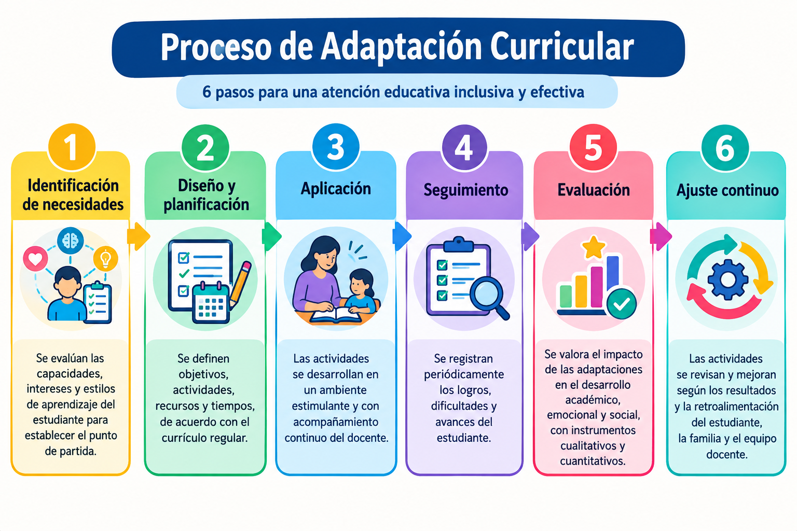
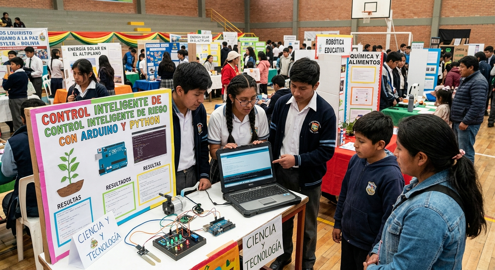
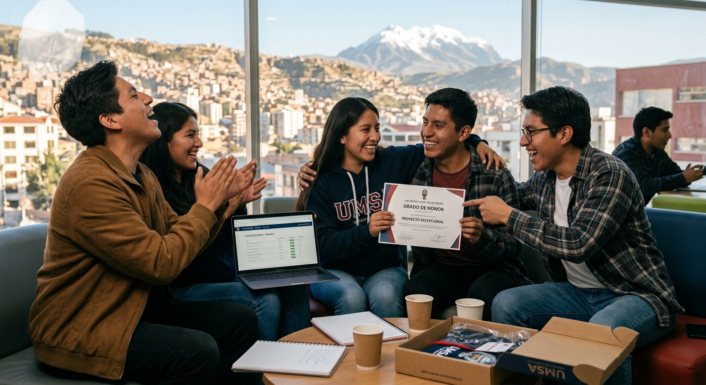

Bienvenida a la bitácora
Este espacio reúne las notas de dos talleres sobre el Programa de Atención Integral a Estudiantes con Talento Extraordinario del Sistema Educativo Plurinacional (SEP), complementadas con el Reglamento oficial aprobado mediante Resolución Ministerial N.º 0795/2021.
El Ministerio de Educación de Bolivia reconoce que las niñas, niños y adolescentes con capacidades por encima de lo esperado para su edad o año de escolaridad tienen derecho a una atención educativa específica. Para responder a esa necesidad existe el Programa de Atención Integral a Estudiantes con Talento Extraordinario, normado por el Reglamento aprobado el 8 de diciembre de 2021. En Chuquisaca, el programa se aplica desde 2016 a través del Centro de Educación Especial Psicopedagógico.
Más abajo encontrarás un resumen de los aspectos más importantes tratados en los talleres. Usa el menú de la izquierda (o el botón «☰ Menú» en pantallas pequeñas) para explorar cada tema con más detalle.
Aspectos más importantes
¿Qué es el talento extraordinario?
Un desarrollo de capacidades, potencialidades y habilidades muy por encima de lo esperado para la edad o el año de escolaridad, en una o varias áreas del saber.
Ver tipos y campos →Organización del programa
Funciona en niveles: estratégico (Ministerio), programático (Educación Especial), departamental, distrital y de coordinación (redes de maestros, familias y estudiantes).
Ver organización →Detección
Primera aproximación para sospechar un posible talento extraordinario, mediante una guía de observación que aplican maestros o piden las familias.
Ver proceso →Identificación
Confirmación mediante una Evaluación Psicopedagógica Integral (talento general) o un Acta de Valoración de un producto u obra (talento específico).
Ver identificación →Modalidades y estrategias de atención
Atención directa (en la unidad educativa) e indirecta (desde el Centro de Educación Especial): adaptaciones curriculares, aceleración, tutorías y escuelas mentoras.
Ver estrategias →Adaptaciones curriculares de enriquecimiento
Estrategias para ampliar, profundizar y diversificar el currículo: enriquecimiento de contenido, proceso, producto y entorno.
Ver tipos de enriquecimiento →Acciones complementarias
Becas, encuentros de talento (a nivel de unidad educativa, distrital, departamental y nacional), intercambios y certificados/credenciales.
Ver acciones →Marco normativo
Reglamento aprobado por Resolución Ministerial N.º 0795/2021, con base en la Ley de Educación N.º 070 «Avelino Siñani – Elizardo Pérez» y otras normas conexas.
Ver marco normativo →Reglamento del Programa
Los dos talleres de esta bitácora
Taller 1
Programa de Atención Integral a Estudiantes con Talento Extraordinario: normativa, organización, detección, identificación, modalidades y estrategias de atención.
Explorar Taller 1Taller 2
Adaptaciones Curriculares de Enriquecimiento: qué son, sus tipos, cómo se implementan, ejemplos, beneficios y recomendaciones para maestros.
Explorar Taller 2Programa de Atención Integral a Estudiantes con Talento Extraordinario
Presentación general: para qué existe el programa, desde cuándo funciona en Chuquisaca y en qué normativa se sostiene.
De qué trata el taller
El taller explica la normativa, la organización, los procedimientos y los apoyos destinados a estudiantes con capacidades superiores. En Chuquisaca, el programa funciona desde 2016, y desde la gestión 2021 se aplica el Reglamento vigente para la evaluación psicopedagógica integral y la atención educativa.
Finalidad del programa
Detectar, identificar, atender y hacer seguimiento a estudiantes que demuestran capacidades superiores en una o varias áreas del conocimiento. Su aplicación es obligatoria en unidades educativas fiscales, de convenio y privadas, y alcanza a los subsistemas de Educación Regular, Alternativa y Especial, y Educación Superior de Formación Profesional.
Tipos y campos de talento extraordinario
El Reglamento reconoce tres tipos de talento y cuatro campos donde puede manifestarse el talento específico.
Tipos de talento extraordinario
| Tipo | Descripción |
|---|---|
| General | Desempeño superior en todos los campos del conocimiento, en equilibrio con el ser, saber, hacer y decidir. No significa que el estudiante deba destacar por igual en todo: puede tener capacidades superiores en las áreas académicas y un rendimiento regular en música, Educación Física u otras áreas técnicas. No debe suponerse que un estudiante con talento general obtendrá siempre las calificaciones más altas en todas las asignaturas. |
| Específico | El estudiante sobresale en un área determinada del conocimiento o de la actividad humana, sin que esto se extienda necesariamente a las demás. |
| Doble excepcionalidad | Talento extraordinario en un campo, combinado con alguna limitación sensorial, física o motora. |
Campos del talento específico
El Reglamento agrupa las áreas del conocimiento en cuatro campos de la actividad humana (Art. 7):
| Campo | Áreas mencionadas en el taller |
|---|---|
| Científico–tecnológico | Matemática, física, química, computación, programación y robótica (también geografía, astronomía, electrónica, entre otras, según el Reglamento). |
| Humanístico–sociocultural | Comunicación, lenguaje, literatura, producción de textos, recopilación de relatos, encuestas, poesía y declamación. |
| Artístico | Dibujo, pintura, escultura, y también música, danza, canto y teatro. |
| Deportivo | Disciplinas individuales (bicicleta, karate, tenis, entre otras). No se consideran deportes colectivos como el fútbol. |
Un criterio adicional mencionado en el taller: en el área deportiva se prioriza la detección hasta los 12 años, edad en la que aún puede observarse la capacidad natural del estudiante antes de que el entrenamiento se convierta en el factor determinante del rendimiento.

Organización administrativa y de gestión
El programa se gestiona en distintos niveles de responsabilidad, desde el Ministerio de Educación hasta las redes de coordinación local.
Niveles de organización
a) Nivel estratégico
Conformado por el Ministerio de Educación y los Viceministerios (Educación Alternativa y Especial, Educación Regular, Educación Superior de Formación Profesional y Ciencia y Tecnología). Define las políticas, planes y disposiciones reglamentarias del programa a nivel nacional.
b) Nivel programático
Corresponde a la Dirección General de Educación Especial, en coordinación con otras direcciones generales. Es responsable de elaborar instrumentos, guías y protocolos, y de capacitar a maestros y administrativos.
c) Nivel operativo (organizativo)
A cargo de las Direcciones Departamentales de Educación, que organizan y ejecutan las acciones del programa en cada departamento.
d) Equipo técnico departamental
Coordina la detección, identificación, atención y seguimiento a nivel de departamento, encabezado por la Subdirección de Educación Alternativa y Especial junto con el Centro de Educación Especial acreditado.
e) Equipo técnico distrital
Articula las acciones entre las unidades educativas, las direcciones distritales y la instancia departamental.
f) Equipo del Centro de Educación Especial (equipo multidisciplinario)
Integrado por el maestro o la maestra responsable de Talento Extraordinario y el equipo multiprofesional (principalmente psicología y pedagogía/psicopedagogía), encargado de las evaluaciones psicopedagógicas.
g) Nivel de coordinación
Comprende las redes de estudiantes, de maestros y de padres y madres de familia. Estas redes permiten coordinar apoyos, dar seguimiento y sostener la continuidad de la atención en el tiempo.
La situación en Chuquisaca
El Centro de Educación Especial Psicopedagógico es la institución acreditada en Chuquisaca para realizar la detección, identificación y atención de estudiantes con talento extraordinario. En departamentos que no cuentan con un centro acreditado pueden establecerse convenios con universidades que dispongan de los profesionales necesarios (psicología, pedagogía y áreas específicas).
Detección de estudiantes con talento extraordinario
La primera aproximación para reconocer posibles señales de talento, antes de confirmar nada de manera formal.
¿Qué es la detección?
La detección es la primera aproximación para reconocer posibles signos de talento extraordinario. No significa que el estudiante ya haya sido identificado como tal: es apenas una sospecha razonable que abre la puerta a una evaluación más profunda.
Puede iniciarse por intervención de maestros y maestras, o de los padres y madres de familia. El maestro cumple un papel importante porque conoce el desempeño cotidiano del estudiante; sin embargo, algunos casos pasan desapercibidos, ya que un docente puede tener entre 40 y 45 estudiantes a su cargo. Si la familia solicita la detección y la unidad educativa no atiende el pedido, puede acudir directamente al Centro de Educación Especial Psicopedagógico.
La guía de detección
La detección se realiza mediante una guía organizada en tres versiones: talento general en primaria, talento general en secundaria, y talento específico para cada área. No contiene preguntas dirigidas al propio estudiante: es una lista de indicadores que el maestro valora a partir de la observación y el conocimiento que tiene del alumno. Cada indicador se califica como Nunca, A veces o Siempre.
Cuando el estudiante cumple los parámetros, el maestro elabora un informe sobre su aprovechamiento y la dirección de la unidad educativa remite la documentación al centro acreditado. También se considera la detección a partir de la participación en olimpiadas científicas, juegos deportivos, encuentros y ferias de ciencia y tecnología.

Identificación del talento extraordinario
El paso que confirma —o descarta— si un estudiante detectado reúne las condiciones para ser parte del programa.
a) Identificación de talento general
Se realiza mediante una Evaluación Psicopedagógica Integral, a cargo del equipo multidisciplinario. La evaluación psicológica considera: capacidad cognitiva, coeficiente intelectual, motivación, creatividad, procesamiento de la información, metacognición, madurez emocional, relaciones sociales y situación familiar.
La evaluación pedagógica, por su parte, determina si los aprendizajes están consolidados, si los conocimientos corresponden al curso y la edad del estudiante o los superan, qué apoyos necesita y si está en condiciones de una posible aceleración. Al finalizar, se emite el Informe Psicopedagógico Integral con los resultados y las recomendaciones.
b) Identificación de talento específico
En las áreas científica, humanística, artística, musical y deportiva, el coeficiente intelectual no determina por sí solo la identificación. Se conforma un Equipo de Valoración de Área, integrado por tres a cinco profesionales especializados, que elabora criterios y los registra en un Acta de Valoración.
El estudiante debe demostrar su capacidad de manera objetiva: mediante una obra artística, una interpretación musical, un proyecto, un prototipo, una producción escrita, una ejecución deportiva u otra evidencia relacionada con el área. El Acta de Valoración es el documento que determina la identificación del talento específico; la Evaluación Psicopedagógica Integral se realiza de forma complementaria para normar el registro oficial del estudiante.
Modalidades de atención
Una vez identificado el talento, la atención integral se organiza en dos modalidades complementarias.
a) Modalidad directa
Se desarrolla en la propia unidad educativa donde estudia el alumno. Comprende:
- Coordinación con los maestros y adaptaciones curriculares de enriquecimiento.
- Seguimiento del rendimiento y orientación pedagógica.
- Profundización de contenidos.
- Coordinación con la familia.
- Prevención del aislamiento y del etiquetamiento del estudiante frente a sus compañeros.
b) Modalidad indirecta
Comprende los apoyos educativos brindados desde el Centro de Educación Especial Psicopedagógico:
- Trabajos externos y orientación psicopedagógica.
- Apoyo emocional y seguimiento especializado.
- Coordinación con otros profesionales y derivaciones cuando corresponde.
- Orientación a maestros y a familias.
Estrategias educativas y acciones complementarias
Las herramientas concretas con las que el programa acompaña a cada estudiante, y las actividades adicionales que enriquecen su desarrollo.
6.1 Adaptaciones curriculares de enriquecimiento
Se aplican en las áreas donde el estudiante demuestra conocimientos o habilidades superiores. No responden a una dificultad, sino a una potencialidad: su propósito es ampliar y profundizar. El maestro puede asignar un trabajo adicional de investigación, un proyecto relacionado con el contenido, o una actividad para indagar y profundizar en la temática. Este tema se desarrolla en detalle en el Taller 2.
6.2 Aceleración pedagógica (salto de curso)
Consiste en el salto de curso. Se aplica preferentemente a estudiantes con talento general que poseen conocimientos superiores al grado y la edad que les corresponden. No es necesario aplicar esta estrategia en todas las materias: si el estudiante llega a un nivel acorde a sus capacidades tras el salto y deja de destacar, las adaptaciones de enriquecimiento se aplican solo mientras siga demostrando conocimientos superiores.
El proceso comprende: aplicación de la guía de detección, informe del maestro, derivación al Centro de Educación Especial Psicopedagógico, evaluación psicológica, evaluación pedagógica, valoración de la madurez emocional, emisión del informe psicopedagógico, decisión de los padres, evaluaciones en la unidad educativa, emisión del Acta Supletoria y trámite administrativo.
Evaluaciones para el salto de curso
La unidad educativa evalúa al estudiante según el plan anual curricular del curso que pretende superar, en áreas académicas, áreas técnicas y todos los contenidos programados para la gestión. No es necesario obtener 100 puntos en todas las materias: se aplica el reglamento general de evaluación, que permite aprobar desde 50 puntos. Si el estudiante reprobara una evaluación, el proceso se detiene, y puede volver a solicitar la aceleración en la siguiente gestión.
6.3 Tutorías, pasantías y emprendimiento
Las tutorías —internas o externas— permiten profundizar habilidades o conocimientos. El programa también brinda apoyo para que el estudiante pueda realizar una pasantía o establecer un emprendimiento propio, poniendo en práctica lo aprendido en un contexto real.
6.4 Escuelas mentoras
Son instituciones que mantienen convenios con la Dirección Departamental de Educación y apoyan a estudiantes con talento específico. En Chuquisaca existen cuatro escuelas mentoras:
| Institución | Área que atiende |
|---|---|
| TECBA (Tecnológico Boliviano Alemán) | Programación, robótica e inglés. |
| Simeón Roncal | Área musical. |
| Miguel Ángel Valda | Área musical. |
| Oropeza | Dibujo, pintura y escultura. |
Se realiza coordinación permanente con los docentes de estas instituciones y seguimiento al trabajo desarrollado por los estudiantes.
6.5 Centro de Talento Extraordinario de Alto Desempeño
El Reglamento establece la existencia de un Centro de Talento Extraordinario de alto desempeño, que debería contar con laboratorios, campos deportivos y planificación especializada, y existir como mínimo uno por departamento. Al momento del taller, Chuquisaca no cuenta todavía con este centro.
6.6 Acciones complementarias
Becas
Existen convenios con instituciones de educación superior para apoyar a estudiantes que terminan el bachillerato, entre ellas la Universidad Católica. Hay un preacuerdo que establece una reducción del 50% en la mensualidad para estudiantes con talento extraordinario, además de becas o apoyos para inglés y cursos complementarios relacionados con la formación profesional elegida.
Encuentros
Desde la gestión 2021 se desarrollan encuentros de productos, habilidades y talento extraordinario, en cuatro fases: unidad educativa, distrital, departamental y nacional. En cada etapa se seleccionan los estudiantes destacados que avanzan a la siguiente fase. Como ejemplo, una estudiante de 2.º de secundaria obtuvo la primera medalla de oro a nivel universitario en el área humanística y sociocultural; en el área musical también se destacaron estudiantes de Tarabuco, Padilla, Macharetí, Camargo y Culpina.
Intercambios
Se organizan intercambios para que los estudiantes conozcan la realidad educativa de otros países y fortalezcan su formación. Algunos estudiantes de Chuquisaca viajaron a Colombia y Argentina.
Certificados y credenciales
Los estudiantes destacados en los encuentros reciben certificados y credenciales, que sirven como aval para gestionar becas cuando continúan su formación profesional.

Operativos de detección y registro
El programa organiza su trabajo anual en dos momentos clave, y da seguimiento a cada estudiante mediante un sistema de registro nacional.
Los dos operativos por gestión
- Operativo inicial: al comienzo del año escolar. Permite avanzar los posibles casos de aceleración, ya que este proceso solo puede realizarse durante el primer trimestre.
- Operativo final: al concluir la gestión. Permite avanzar la detección y la evaluación de cara a la siguiente gestión, y se prioriza a estudiantes ganadores de olimpiadas científicas, juegos deportivos y otros eventos competitivos reconocidos.
La identificación formal se realiza desde 1.º de primaria hasta 5.º de secundaria. En el nivel inicial no se aplica una evaluación de identificación; en su lugar, existe una orientación a la familia y a los maestros cuando un niño o niña presenta logros de precocidad.
Registro y seguimiento
Todos los estudiantes identificados deben registrarse en el Sistema de Información Educativa (SIE). Este registro permite dar continuidad a la atención, planificar recursos, organizar a los equipos técnicos y preparar respuestas educativas en los niveles distrital, departamental y nacional.
Al momento del taller, Chuquisaca contaba con aproximadamente 50 estudiantes identificados, entre talento general y talento específico.
Atención en el área rural
El procedimiento es el mismo en el área urbana y en el área rural, pero enfrenta desafíos logísticos particulares.
Las principales dificultades mencionadas en el taller son la distancia, la falta de transporte y el traslado de estudiantes y maestros, lo que dificulta llegar a todas las unidades educativas. En muchos casos, los estudiantes deben trasladarse hasta la ciudad para las evaluaciones; en cambio, la orientación a los maestros puede realizarse a distancia, por ejemplo mediante videollamada.
Preguntas y respuestas
Dudas planteadas por las y los participantes del taller, con las respuestas del equipo técnico.
1. ¿Cómo distinguir el talento innato de la competencia adelantada?
La sobresaliencia puede presentarse en niños cuyos padres adelantan contenidos en casa, en hijos de docentes, o en estudiantes que realizan tareas junto a hermanos mayores. Estos casos pueden aprender contenidos de manera mecánica y parecer adelantados sin serlo realmente. El maestro no siempre puede distinguirlo dentro del aula: debe aplicar la guía de detección y derivar el caso. La Evaluación Psicopedagógica Integral es la que permite determinar si existe un talento extraordinario real o si se trata de una sobresaliencia aparente, ligada al entorno más que a la capacidad de la niña o el niño.
2. ¿Cómo se aplica el enriquecimiento en el área rural?
Las adaptaciones las realiza el maestro del aula en las áreas donde el estudiante demuestra conocimientos superiores; puede asignarle un trabajo de investigación o un proyecto para profundizar la temática, sin necesidad de recursos adicionales.
3. ¿Cómo atender al estudiante sin descuidar al resto del curso?
No se necesita brindar una atención individual durante toda la clase. El maestro puede trabajar el mismo tema con todo el curso y, además, asignar al estudiante con talento extraordinario un trabajo adicional acorde a su nivel.
4. ¿Cómo se trabaja con las escuelas mentoras?
El estudiante asiste a la institución correspondiente a su área de talento. Se coordina con el docente especializado de esa institución y se realiza seguimiento al trabajo que va desarrollando.
5. ¿Qué apoyos reciben los maestros?
Se hace seguimiento al rendimiento del estudiante para reconocer en qué áreas continúa destacando. Según los resultados, se orienta al maestro sobre cómo aplicar la adaptación curricular de enriquecimiento, y pueden coordinarse apoyos adicionales con otros profesionales.
6. ¿Cómo debe actuar el maestro ante un posible caso?
Debe aplicar la guía de detección y remitir los resultados. No le corresponde al maestro determinar por sí solo si existe talento extraordinario, ni descartar una posible sobresaliencia: eso se define mediante la Evaluación Psicopedagógica Integral.
7. ¿Cómo se atiende la parte emocional del estudiante?
La evaluación permite reconocer situaciones emocionales o sociales que requieran apoyo. En esos casos se brindan recomendaciones a estudiantes, maestros y padres de familia, y se organizan talleres sobre manejo de la frustración e inteligencia emocional. Cuando se necesita un apoyo mayor, se coordina con otras instituciones especializadas.
Adaptaciones Curriculares de Enriquecimiento para Estudiantes con Talento Extraordinario
Un taller dedicado por completo a una de las estrategias más usadas del programa: el enriquecimiento curricular.
Este segundo taller profundiza en las adaptaciones curriculares de enriquecimiento, la estrategia de atención directa más frecuente dentro del programa (introducida brevemente en el punto 6.1 del Taller 1). Aquí se explica qué son, por qué son importantes, sus cuatro tipos, cómo se implementan paso a paso, ejemplos reales trabajados en Chuquisaca, sus beneficios y algunas recomendaciones prácticas para los maestros.
¿Qué son las adaptaciones curriculares de enriquecimiento?
Una estrategia para ir más allá del currículo regular, no para simplificarlo.
Son estrategias destinadas a estudiantes con talento extraordinario que permiten ampliar, profundizar y diversificar el currículo regular de acuerdo con sus capacidades, intereses y necesidades. Permiten trabajar contenidos con mayor complejidad y profundidad, favoreciendo el desarrollo de sus potencialidades.
- La flexibilización curricular, que ajusta el currículo para hacerlo más accesible.
- Las adaptaciones curriculares de acceso o de apoyo, orientadas a compensar una dificultad de aprendizaje.
Importancia del enriquecimiento curricular
Por qué no basta con dejar que el estudiante avance solo.
Los estudiantes con talento extraordinario pueden dominar con rapidez determinados contenidos y percibir las actividades habituales del aula como repetitivas. Esta situación puede generar aburrimiento, desmotivación o desinterés. Durante la exposición se mencionó que la ausencia de un enriquecimiento adecuado puede relacionarse con un porcentaje cercano al 20% de bajo rendimiento o desinterés en estos estudiantes (dato mencionado de forma referencial en el taller, sin cita a una fuente específica).
El enriquecimiento curricular busca mantener la motivación del estudiante y favorecer su desarrollo integral en los ámbitos cognitivo, emocional y social. También contribuye al fortalecimiento del pensamiento crítico y la creatividad.
Tipos de enriquecimiento curricular
Cada estudiante presenta características y capacidades diferentes, por lo que las adaptaciones deben elaborarse según sus necesidades. El taller propuso cuatro tipos principales.
1. Enriquecimiento de contenido
Consiste en ampliar y profundizar los temas del currículo cuando el estudiante demuestra conocimientos avanzados en un área determinada: contenidos más complejos, investigaciones, proyectos especiales y actividades interdisciplinarias.
Ejemplos del taller: investigaciones científicas autónomas en física o química; análisis literarios y producción de textos; proyectos que relacionan matemáticas, ciencia y humanidades.
2. Enriquecimiento del proceso
Se relaciona con la forma de aprender: promueve un aprendizaje profundo y autónomo mediante la resolución de problemas, el pensamiento crítico y el trabajo independiente.
Ejemplos del taller: debates académicos, experimentos científicos y talleres creativos. Se destacó la importancia de plantear retos adecuados que permitan al estudiante desarrollar sus capacidades a un nivel más avanzado.
3. Enriquecimiento del producto
Permite que el estudiante demuestre lo aprendido mediante trabajos y creaciones propias: presentaciones multimedia, prototipos tecnológicos, ensayos, publicaciones y expresiones artísticas o culturales.
Ejemplos del taller: prototipos tecnológicos diseñados para ayudar a personas con dificultades de movilidad, y proyectos pensados para apoyar a bomberos durante incendios forestales. También se mencionaron ensayos, recopilación de relatos ancestrales, producciones teatrales, pinturas, esculturas, dibujos y composiciones musicales. Se resaltó especialmente el valor de los productos con utilidad social.
4. Enriquecimiento del entorno
Consiste en adecuar los espacios, recursos y apoyos disponibles para favorecer el desarrollo del talento extraordinario: laboratorios especializados, tecnología avanzada, bibliotecas, clubes, expertos, tutorías y mentorías.
Se destacó la importancia de contar con apoyo especializado cuando el estudiante necesita profundizar más allá de las actividades regulares. Las tutorías pueden ofrecer acompañamiento extraescolar y trabajar contenidos de mayor complejidad.

Proceso de implementación
Seis pasos para poner en marcha una adaptación curricular de enriquecimiento, del diagnóstico al ajuste continuo.
- Identificación de necesidades: se evalúan las capacidades, intereses y estilos de aprendizaje del estudiante para establecer el punto de partida.
- Diseño y planificación: se definen objetivos, actividades, recursos y tiempos, de acuerdo con el currículo regular.
- Aplicación: las actividades se desarrollan en un ambiente estimulante y con acompañamiento continuo del docente.
- Seguimiento: se registran periódicamente los logros, dificultades y avances del estudiante.
- Evaluación: se valora el impacto de las adaptaciones en el desarrollo académico, emocional y social, con instrumentos cualitativos y cuantitativos.
- Ajuste continuo: las actividades se revisan y mejoran según los resultados y la retroalimentación del estudiante, la familia y el equipo docente.

Ejemplos de actividades
Del aula a los encuentros nacionales: así escalan las actividades de enriquecimiento.
Entre las principales actividades mencionadas en el taller se encuentran las ferias científicas, las olimpiadas del conocimiento, los concursos literarios y artísticos, los proyectos interdisciplinarios de investigación, los talleres de innovación y emprendimiento, y las redes de jóvenes con talento extraordinario.
También se desarrollaron proyectos relacionados con información, programación, tecnología, e investigaciones con plantas medicinales. Muchas de estas actividades se organizan primero dentro del aula, en la propia unidad educativa, y luego escalan a nivel distrital, departamental y nacional.

Beneficios del enriquecimiento curricular
Los efectos positivos observados van más allá de lo académico.
Rendimiento académico
Favorece niveles más altos de logro y permite desarrollar mayores capacidades.
Motivación y autoconcepto
Fortalece el compromiso, la confianza y la satisfacción personal del estudiante.
Desarrollo social y emocional
Contribuye a mejorar la colaboración, la empatía, la gestión emocional y la capacidad de relacionarse con otros estudiantes.

Recomendaciones para los maestros
Buenas prácticas señaladas por el expositor para aplicar el enriquecimiento de manera efectiva.
- Conocer los intereses, fortalezas y necesidades de cada estudiante.
- Diseñar actividades desafiantes, pero alcanzables.
- Fomentar la autonomía y la creatividad.
- Trabajar de manera coordinada con especialistas y con la familia.
- Apoyarse en las redes de maestros y en los equipos de valoración para mejorar los trabajos realizados por los estudiantes.
Preguntas y respuestas
Dudas planteadas por las y los participantes durante el segundo taller.
1. Discapacidad y talento extraordinario
Un estudiante puede demostrar capacidades avanzadas en determinadas áreas aunque presente otras condiciones. Se mencionaron casos de estudiantes con síndrome de Asperger con niveles académicos superiores en áreas específicas. Las adaptaciones deben centrarse en las áreas donde se evidencian mayores potencialidades: es el caso, precisamente, de la doble excepcionalidad descrita en el Taller 1.
2. Mentorías
Se trabaja en una propuesta para establecer requisitos y organizar mejor este apoyo. Entre los aspectos considerados están la especialización del mentor en el área correspondiente, su formación en adaptaciones curriculares, y la elaboración de un plan de trabajo. Por ahora, estas mentorías son limitadas. El acompañamiento podría desarrollarse durante aproximadamente seis meses y concluir con la presentación de un producto realizado por el estudiante. Algunos estudiantes ya reciben apoyo especializado para prepararse en olimpiadas académicas, con contenidos y ejercicios de mayor complejidad.
3. Edad para realizar la detección
Algunos niños pueden demostrar capacidades avanzadas desde edades tempranas, como leer, escribir o realizar operaciones matemáticas. El Reglamento contempla evaluaciones formales desde los 6 años. También debe considerarse la madurez emocional y social, ya que influye en la adaptación del estudiante a mayores niveles de exigencia académica.
4. Espacio para presentar productos
Anteriormente se realizaban encuentros y certámenes específicos para presentar trabajos y capacidades. Actualmente también se plantean actividades dentro de las propias unidades educativas, para facilitar la detección y valoración temprana de estudiantes con talento.
5. Detección e identificación, en síntesis
El proceso inicia con una guía de detección aplicada por el docente, que funciona como una lista de cotejo para reconocer posibles señales de talento extraordinario. Cuando el estudiante alcanza un porcentaje alto de los indicadores (mencionado en este taller como cercano al 80%), puede solicitarse una Evaluación Psicopedagógica Integral para confirmar o descartar el caso.
En los casos de talento específico también participan docentes especialistas y equipos de valoración: el producto o desempeño presentado por el estudiante tiene un papel central en esa valoración.